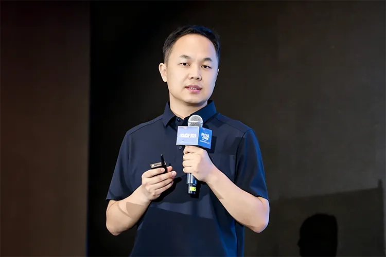
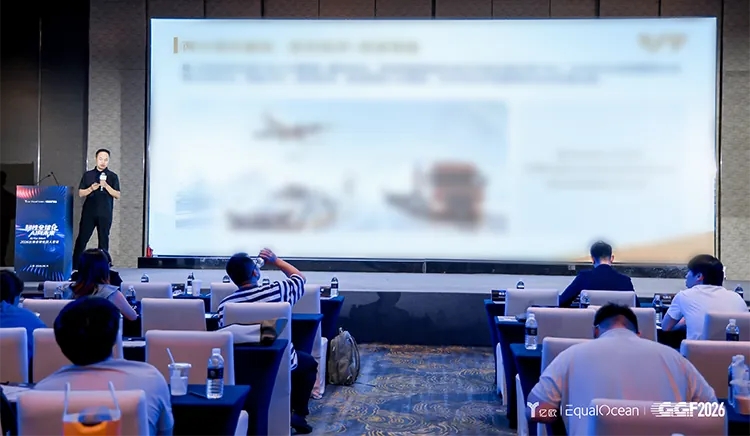
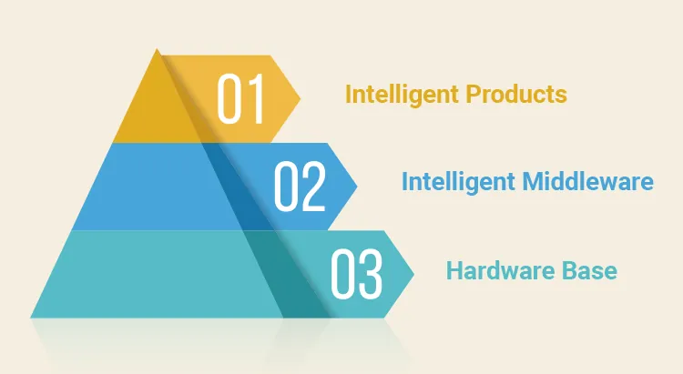

AI is reshaping industries across the world. Chinese companies are stepping into a new stage of global expansion. Businesses operating overseas face evolving markets, rapid technological progress and mounting international competition. They now focus on tapping new growth potential and building unique competitive advantages.
EqualOcean 2026 GoGlobal Forum of 100 (GGF2026) was successfully held in Shanghai on June 11. It carried the theme Resilient Globalization, GoGlobal for the Future. Participants exchanged views on AI led industrial transformation and global business opportunities. They worked together to explore sound development paths for Chinese companies operating worldwide.

This annual flagship activity of the GoGlobal Committee of 100 (GGC100) brought together entrepreneurs, scholars, investors and representatives from international organizations.
Voyager Tech has increased investment in artificial intelligence in recent years. The company upholds the mission Empower Global Smart Mobility with Self-developed Technologies. It keeps expanding its global presence. Voyager Tech leverages home grown innovations to support the development of smart industries around the world and has developed its own approach to global expansion.
Roc Bao, Smart Cockpit Solution Director at Voyager Group, delivered a keynote speech at the forum. The speech was titled From Automotive Intelligent Driving to Low-Altitude Economy and Embodied Intelligence Expand Global Growth with AI Empowerment and Cross-Industry Technology Reuse. He shared insights with industry peers on how Chinese technology firms can drive global growth through AI innovation and cross sector technology application.


Promising Global Blue Ocean
Three Tracks Form a Trillion-Dollar Market
Intelligent vehicles, low-altitude economy and embodied intelligence represent three high potential sectors that form a huge emerging market. Intelligent vehicles stand out as a key application area for AI and a solid technological foundation for Chinese companies going global. A 2025 report from Morgan Stanley states that the global market for advanced autonomous driving will exceed 200 billion US dollars by 2030. Currently only one eighth of vehicles worldwide feature smart driving functions. The penetration rate is expected to rise to one quarter in five years which points to strong growth ahead for the industry.
Chinese automakers have earned global recognition with solid technological capabilities. People’s Daily Overseas Edition reported that three Chinese vehicle brands made it to the world’s top ten by sales volume in 2025. Leading institutions hold positive views on long term prospects. McKinsey & Company predicts three to five Chinese brands will rank among the world’s top ten automakers by 2030. UBS noted in its 2025 report that Chinese automakers will hold one third of the global market share by 2030. Overseas markets will become a major profit driver for China’s intelligent vehicle industry chain.
Low-altitude economy and embodied intelligence also create substantial new growth space. Morgan Stanley forecasts the global low-altitude economy market will surpass 300 billion US dollars by 2030. According to the 2026 Report on Top 10 Future Industry Tracks, the embodied intelligence sector will achieve a compound annual growth rate of 73 percent over the next five years. Its global market size will reach 238.8 billion RMB by 2030.
These three promising sectors together create vast market opportunities worth trillions. Voyager Tech devotes major efforts to technology research in intelligent vehicles while advancing AI capabilities. The company also expands business into low-altitude economy and embodied intelligence. It keeps up with industry trends and seizes opportunities brought by global market expansion.
The Voyager Approach Cross-Industry Technology Reuse
Rooted in the Automotive Sector One R&D for Multi-Scenario Deployment
Intelligent vehicles, low-altitude aircraft and robots can all be defined as intelligent mobile entities. They differ in product form yet share core capabilities in perception, positioning, decision making and control. Technologies proven effective in one field can be applied to other sectors at relatively low cost. The automotive industry has accumulated decades of engineering expertise, mass production experience, data resources and mature supply chains. These strengths strongly support the development of low-altitude economy and embodied intelligence.
Voyager Tech applies its complete set of automotive research, production and operation systems across different industries. Its full workflow for development, manufacturing and after sales services fits well with aerial vehicles and robots. Supported by mature hardware, testing and quality control systems, the company cuts research and development cycles by over 40 percent. It effectively reduces costs for technology research and trial operation in overseas markets. Large volumes of operational data collected from vehicles and component reliability data help improve product performance and lower failure risks. Coupled with a complete supply chain and rich operational experience, these strengths enable coordinated global business expansion across the three core sectors.
Independent core technologies lay the groundwork for cross industry technology application and large scale global deployment. Voyager Tech adopts full-stack independent R&D and a three-tier decoupled architecture. It has built a technology system adapted to global market demands. The system complies with local regulations and enables efficient customized development.
Full-stack independent R&D underpins Voyager Tech’s global technology expansion. The company completes in house development covering underlying algorithms, middleware and application solutions. It has developed core technologies including VT-Sensing and VT-Navi. The technology Visual Fusion Navigation Technology for Complex Environments won the Second Prize of Outstanding Scientific Research Achievements awarded by the Ministry of Education. This honor reflects wide industry recognition of its technical strength. Voyager Tech continues to advance intelligent technology development. Its self developed multi frame dynamic noise reduction AI-ISP chip combines ISP algorithms and AI powered 3D noise reduction technology. The chip delivers clear imaging in low light environments such as underground parking lots and mountain roads at night. Full control over underlying technologies allows the team to adjust and reorganize technical solutions freely. The company no longer relies on overseas suppliers for chips and algorithms. It can tailor products to meet diverse demands in Europe, Southeast Asia, Latin America and other regions. This capability stands as a key advantage for Voyager Tech to conduct high quality technology exports.
The three-tier decoupled architecture enables Voyager Tech to achieve one round of research and development for multiple business tracks and global markets. The overall technology system is divided into three layers including hardware base, intelligent middleware, intelligent products. Self developed middleware supports standardized pluggable algorithm sockets. This design breaks tight links between hardware platforms, algorithm models and application scenarios. The system is compatible with mainstream computing chips worldwide. Its technologies can be quickly applied to passenger vehicles and commercial vehicles. They also support overseas projects such as drone inspection, low altitude flight and industrial robot operations.

Voyager Tech has completed its global layout and entered the markets of Germany and Brazil.
Artificial intelligence keeps transforming the global smart industry. Models for overseas business continue to evolve. Companies now focus more on exporting advanced technologies and delivering comprehensive solutions instead of merely selling products. Voyager Tech builds on mature automotive technologies and takes cross industry technology application as its core development path. It strengthens core capabilities through full-stack independent R&D and expands value across sectors via innovative architecture design. The company will keep bringing Chinese innovations to empower smart industries across the globe.
References
[1] Morgan Stanley. AI Is Coming to Your Steering Wheel [EB/OL]. (2025-08-21)[2026-06-11].
https://www.morganstanley.com/insights/articles/self-driving-vehicles-industry-growth.
[2] People's Daily Overseas Edition. Three Chinese Automakers Rank among the World's Top 10 Driven by New Energy and Intelligent Technology Advantages [EB/OL]. (2026-03-26)[2026-06-11].
https://paper.people.com.cn/rmrbhwb/pc/content/202603/26/content_30147326.html.
[3] People's Daily Client. McKinsey Predicts China to Become the World's Largest Automobile Exporter in 2025 [EB/OL]. (2025-11-29)[2026-06-11].
https://www.peopleapp.com/column/30050860008-500007227659.
[4] Huanqiu Times. Technological Advantages Fuel Brand Transformation, Overseas Sales Become Core Growth Driver: UBS Predicts Chinese Automakers to Hold One-Third of Global Market Share by 2030 [EB/OL]. (2025-12-18)[2026-06-11].
https://world.huanqiu.com/article/4PaNiFctXgy.
[5] China Securities Journal, China Information Industry News. China's Low-Altitude Economy Market Size Expected to Exceed 2 Trillion Yuan by 2030 [EB/OL]. (2025-11-24)[2026-06-11].
https://www.cnii.com.cn/cyjs/202511/t20251124_698373.html.
[6] China National Radio. Release of the Report on the Top 10 Future Industry Tracks 2026 [EB/OL]. (2026-03-27)[2026-06-11].
https://www.cnr.cn/bj/sijh/20260327/t20260327_527564198.shtml.
[7] Huanqiu Network. Morgan Stanley: The Next Two Decades Will Witness Rapid Development of Flying Cars, and China May Become the World's Largest Low-Altitude Transportation Market [EB/OL]. (2025-10-18)[2026-06-11].
https://tech.huanqiu.com/article/4Om3Oy3oFdJ.